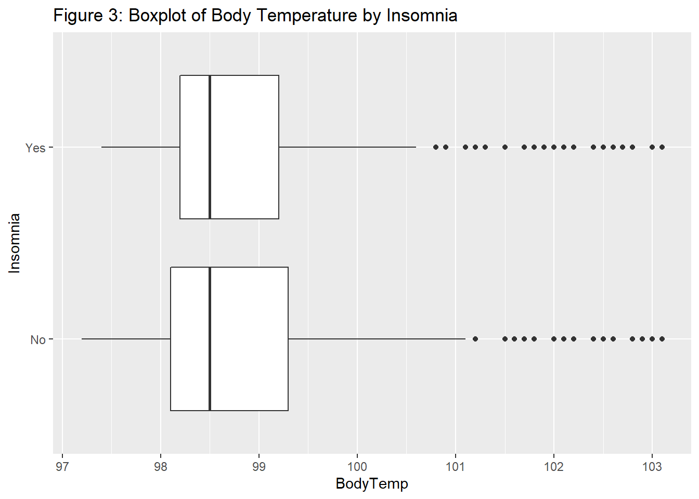
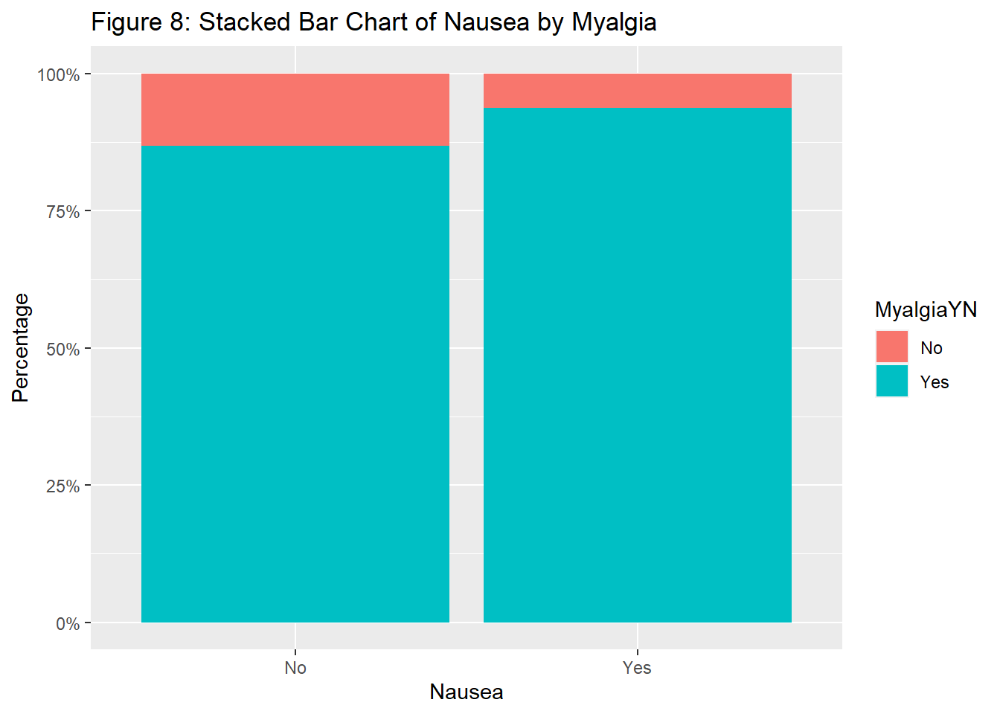

This is the exploratory analysis portion of the module-Fitting Basic Statistical Models.We will be looking at data from Brian McKay’s paper. For our analysis, we are using body temperature as our continuous outcome and Nausea as our main categorical outcome. We will use the other variables within the data set to determine any correlations with the outcomes.
This exploration portion will include some summary statistics for continuous variables as well as histograms to show the distribution of continuous variables. Finally we will have some plots comparing two or more variables.
To find the full analysis on this data set, click on this link and it will take you to my github repository.
#Reading in packages needed and the data set from using the here package
library(here)
library(tidyverse)
## -- Attaching packages --------------------------------------- tidyverse 1.3.1 --
## v readr 2.0.2 v forcats 0.5.1
## v stringr 1.4.0
## -- Conflicts ------------------------------------------ tidyverse_conflicts() --
## x rlang::%@%() masks purrr::%@%()
## x rlang::as_function() masks purrr::as_function()
## x readr::col_factor() masks scales::col_factor()
## x vctrs::data_frame() masks tibble::data_frame(), dplyr::data_frame()
## x purrr::discard() masks scales::discard()
## x Matrix::expand() masks tidyr::expand()
## x dplyr::filter() masks stats::filter()
## x stringr::fixed() masks recipes::fixed()
## x rlang::flatten() masks purrr::flatten()
## x rlang::flatten_chr() masks purrr::flatten_chr()
## x rlang::flatten_dbl() masks purrr::flatten_dbl()
## x rlang::flatten_int() masks purrr::flatten_int()
## x rlang::flatten_lgl() masks purrr::flatten_lgl()
## x rlang::flatten_raw() masks purrr::flatten_raw()
## x rlang::invoke() masks purrr::invoke()
## x dplyr::lag() masks stats::lag()
## x rlang::list_along() masks purrr::list_along()
## x rlang::modify() masks purrr::modify()
## x Matrix::pack() masks tidyr::pack()
## x rlang::prepend() masks purrr::prepend()
## x readr::spec() masks yardstick::spec()
## x rlang::splice() masks purrr::splice()
## x Matrix::unpack() masks tidyr::unpack()
library(scales)
library(gtsummary)
##
## Attaching package: 'gtsummary'
## The following object is masked from 'package:recipes':
##
## all_numeric
data <- readRDS(here::here("files" ,"processeddata.rds"))
Since there are a lot of variables to select for predicting body temperature and nausea, I will pick a couple that seem to be interesting or possibly somewhat related (at least I think). Below are the variables I will explore along with our main outcomes:
ChillsSweats: Having Chills or Sweats (Yes or No)
SubjectiveFever: If a person has a subjective fever (Yes or No)
Diarrhea: Having diarrhea (Yes or no)
Insomnia: Is the person experiencing sleeplessness (Yes or No)
MyalgiaYN: If a person experiences myalgia (Yes or No)
Univariate Exploration
Main Outcomes
Body Temperature
This is showing the summary statistics of the body temperature of each subject.
## Min. 1st Qu. Median Mean 3rd Qu. Max.
## 97.20 98.20 98.50 98.94 99.30 103.10
We can see that the body temperatures ranges from 97.2 and 103.1 degrees Fahrenheit with a mean temperature of 98.94 and median of 98.5. The general standard temperature is supposed to be around 98.6 but, with recent studies it seems to be lower and within the low 98’s. Therefore, the 25% of people over a temperature of 99.3 might have some reasons on why their temperatures are so high.
Below is showing a histogram of body temperatures.
plot1 = data %>% ggplot(aes(x=BodyTemp)) + geom_histogram(binwidth = 0.5) + ggtitle("Figure 1: Histogram of Body Temperatures") + xlab("Body Temperature (in Fahrenheit)") + theme(plot.title = element_text(hjust=0.5))
plot1

In this histogram, you can see that the temperatures are right skewed with most of the data is around 98 degrees. This is a similar result from the summary statistics as 75% of the data is under the temperature of 99.3.
Nausea
Here we are looking at the data frequency of those who have Nausea and those who dont. This is expressed through a bar chart as well.
summary(as.factor(data$Nausea))
## No Yes
## 475 255
plot2 = data %>% select(Nausea) %>% group_by(Nausea) %>% summarise(count = n()) %>% ggplot(aes(x=Nausea, y=count)) +geom_bar(stat="identity") +ggtitle("Figure 2: Bar Chart of Nausea") + theme(plot.title = element_text(hjust=0.5))
plot2

We can see that there are double the amount of people who are not experiencing nausea.
Predictor Variables
This table is looking at all of the predictor variables where it is diplaying the counts of yes and the percent of the people who had a yes response.
data %>%
select(ChillsSweats, SubjectiveFever, Diarrhea, Insomnia, MyalgiaYN) %>%
tbl_summary()
| Characteristic |
N = 730 |
| Chills/Sweats |
600 (82%) |
| Subjective Fever |
500 (68%) |
| Diarrhea |
99 (14%) |
| Sleeplessness |
415 (57%) |
| Myalgia |
651 (89%) |
Of all of the predictor variables insomnia has the most even distribution. This could potentially mean that insomnia might not have an impact on our outcomes but we will have to see. We can also see that myalgia is the most one-sided predictor variable and we will see if that is due to some sort of association with either body temperature or nausea. All of these variables seem to have more yes values than no except the diarrhea variable.
Bivariate Analysis
Body Temperature vs. Predictor Variables
Body Temperature by Insomnia
#This is a boxplot of body temperature by insomnia.
plot3 = data %>% ggplot(aes(x=BodyTemp, y=Insomnia)) + geom_boxplot() + ggtitle("Figure 3: Boxplot of Body Temperature by Insomnia")
plot3

We can see that the distributions are relatively the same no matter if the person experience insomnia or not.
Body Temperature by Chill or Sweats
#This is a boxplot of body temperature by chills or sweats.
plot4 = data %>% ggplot(aes(x=BodyTemp, y=ChillsSweats)) + geom_boxplot() + ggtitle("Figure 4: Boxplot of Body Temperature by Chill or Sweats") + ylab("Chills or Sweats")
plot4
In this boxplot, we can see there is still definetly some overlap between the two groups but people who did not experience chills and sweats seem to be more on the lower end of the body temperatures compared to this who have experienced them. However it might look to seem that no significant difference is present based on the boxplots.
Body Temperature by Myalgia
#This is a boxplot of body temperature by myalgia (yes or no).
plot5 = data %>% ggplot(aes(x=BodyTemp, y=MyalgiaYN)) + geom_boxplot() + ggtitle("Figure 5: Boxplot of Body Temperature by Myalgia") + ylab("Myalgia")
plot5
Similar to chills or sweats, myalgia seems to favor the lower end of body temperatures but still with overlap. The spread of observations is smaller for those who did not experience myalgia except the outliers present.
Nausea vs. Prediction Variables
Nausea by Subjective Fever
#This is a stacked percentage bar plot of nausea by subjective fever. The way I did it was creating a count variable for the number of yes's and no's for nausea. This value will be used on the y-axis and turned into a percentage using the scales package.
plot6 = data %>% select(Nausea, SubjectiveFever) %>% group_by(Nausea, SubjectiveFever) %>% summarise(count = n()) %>% ggplot(aes(x=Nausea, y=count, fill=SubjectiveFever)) + geom_bar(position="fill", stat="identity") + scale_y_continuous(labels=scales::percent) + ggtitle("Figure 6: Stacked Bar Chart of Nausea by Subjective Fever") +ylab("Percentage")
## `summarise()` has grouped output by 'Nausea'. You can override using the `.groups` argument.
If we look at the stacked bar chart, we can see that there are more people who have a subjective fever when they are nauseated. Around 75% of people who are nauseated have subjective fevers compared to around 60% for not nauseated.
Nausea by Diarrhea
#This is a stacked percentage bar plot of nausea by diarrhea. The way I did it was creating a count variable for the number of yes's and no's for nausea. This value will be used on the y-axis and turned into a percentage using the scales package.
plot7 = data %>% select(Nausea, Diarrhea) %>% group_by(Nausea, Diarrhea) %>% summarise(count = n()) %>% ggplot(aes(x=Nausea, y=count, fill=Diarrhea)) + geom_bar(position="fill", stat="identity") + scale_y_continuous(labels=scales::percent) + ggtitle("Figure 7: Stacked Bar Chart of Nausea by Diarrhea") +ylab("Percentage")
## `summarise()` has grouped output by 'Nausea'. You can override using the `.groups` argument.
In figure 7, we can see that around 25% of people who are nauseated also have diarrhea compared to only 10% has diarrhea while not being nauseated.
Nausea by Myalgia
#This is a stacked percentage bar plot of nausea by myalgia. The way I did it was creating a count variable for the number of yes's and no's for nausea. This value will be used on the y-axis and turned into a percentage using the scales package.
plot8 = data %>% select(Nausea, MyalgiaYN) %>% group_by(Nausea, MyalgiaYN) %>% summarise(count = n()) %>% ggplot(aes(x=Nausea, y=count, fill=MyalgiaYN)) + geom_bar(position="fill", stat="identity") + scale_y_continuous(labels=scales::percent) + ggtitle("Figure 8: Stacked Bar Chart of Nausea by Myalgia") +ylab("Percentage")
## `summarise()` has grouped output by 'Nausea'. You can override using the `.groups` argument.
 We can see that for both those who arent and who are nauseated have relatively high percentage of those who experience Myalgia.
Nausea by Insomnia
#This is a stacked percentage bar plot of nausea by insomnia. The way I did it was creating a count variable for the number of yes's and no's for nausea. This value will be used on the y-axis and turned into a percentage using the scales package.
plot9 = data %>% select(Nausea, Insomnia) %>% group_by(Nausea, Insomnia) %>% summarise(count = n()) %>% ggplot(aes(x=Nausea, y=count, fill=Insomnia)) + geom_bar(position="fill", stat="identity") + scale_y_continuous(labels=scales::percent) + ggtitle("Figure 9: Stacked Bar Chart of Nausea by Insomnia") +ylab("Percentage")
## `summarise()` has grouped output by 'Nausea'. You can override using the `.groups` argument.
Finally just like the boxplot of body temperature and insomnia, insomnia shares a similar relationship whether or not the person is nauseated or not.